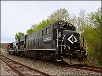

Page
4.
The
Owego & Harford and the Tioga Scenic.
The Owego
& Harford Railway began service on May 1, 1992,
after the Tioga Central left Owego. The Owego &
Harford, OHRY, is currently the freight operator of
the line between Owego & Harford Mills, and the
Tioga Scenic offered passenger excursions between
1992 and 2005.
The Owego
& Harford is controlled by Steven C. May, who
also controls
The Luzerne & Susquehanna Railway. - source
The
Meridian Southern Railway in Mississippi.
And in 2009
a fourth shortline has been created in the O&H
family, the new Lehigh Railway.
The first
locomotive used by the new OHRY in 1992 was leased
Lackawanna Valley MLW RS18
1801, This unit is
now GVT
1801, (Depew, Lancaster & Western)
currently (2008) stored in Batavia, NY
The Tioga
Scenic started up in 1992, alongside the O&H,
taking over the passenger excursion side of the
Owego operation after the Tioga Central left town.
The Tioga
Scenic was owned and operated by the Owego &
Harford, essentially the same operation as the
O&H, just given the name "Tioga Scenic" for the
excursion side of the operation.
Tioga
Scenic - passenger excursions only.
Owego &
Harford - freight only.
I am aware
of only one locomotive that was specifically
lettered for the Tioga Scenic,
EMD SW1 No.
40.
The number
40 was painted
green while it operated the excursion trains
1996 - 2005,
with "Tioga
Scenic Railroad" in gold lettering on the side.
The Tioga
Scenic ran its last excursion trains in autumn 2005,
then ceased passenger excursions. Near the end of
excursion operations, The number 40 was painted solid
red, with no markings other than the number 40.
(it is seen
in Red in September 2005)
and still
remains in Owego as of 2017. The unit is still owned
by the O&H, although she
currently has no reporting marks.
(see page 2 for a
complete history and timeline)
Current OHRY Roster, March 2017:
OHRY 40 - EMD SW1 - stored in
Owego.
OHRY 1216 - GMD SW1200RS - operating, Owego.
OHRY 2211 - GE U23B - operating, Owego.
OHRY 2302 - GE U23B - operating, Owego.
Owego & Harford,
Tioga Scenic
All-Time Roster
TS/OHRY 40

Model: EMD SW1
Built: Aug 1953
Bld No: 18193
Order No: 4214-8
History:
1953 - Built as Boston & Maine 1126
19?? - To Springfield Terminal 1405
1991 - November -to Provincial Shortline 40
1991 - 1995 - number 30 and 40 stored OOS in
Portland Maine
1995 or 1996 - to Luzerne & Susquehanna
40
1995 or 1996 - to Tioga Scenic 40
19?? - Number 40 is painted from the
Red/Yellow/Grey P.S. colors to the TS green
scheme.
2005 - Number 40 is painted from Green with Tioga
Central markings,
to
solid red, with no markings other than the number
40.
2005 - Autumn, Tioga Scenic ends passenger
excursions.
2017 - Number 40 remains in Owego, still owned by
the O&H,
although
she currently has no reporting marks.
There has been some confusion about the origins of 30
and 40..
but I straightened it out!
some rosters say 30 was B&M 1126 and 40 was B&M
1127.
this is incorrect.
Provencial Shortline didnt number them in consecutive
order.
30 is actually B&M 1127
40 is actually B&M 1126
this
photo proves it.
OHRY 151

Model: GMD GP9
Built: Apr 1956
Bld No: A-930
History:
1956 - built by GMD (Canada) as Quebec North Shore
& Labrador Railway (QNSL) 151
19?? - at some point, the nose was chopped.
1991 - to Century Locomotive Parts
1993 - to Owego & Harford 151, painted in an
EL-like scheme.
1997 - returns back home to Canada, to Canada
Allied Diesel.
1997 - to RLK (RailLink Canada Limited)
(RailAmerica) 4205, painted solid blue.
2008 - Scrapped October 2008 in Hamilton, Ontario
Canada.
OHRY 1216

Model: GMD SW1200RS
Built: Apr 1956
Bld No: A757
History:
1956 - built by GMD (Canada) as Canadian National
1587
19?? - renumbured to CN 1216
19?? - To Luzerne & Susquehanna 1216
2005? - To Owego & Harford 1216
2008 - Currently operating as OHRY 1216, named
"Bullwinkle"
OHRY 1811

Model: MLW RS18u
Built: Apr 1958
Bld No: 82255
History:
1958 - Built by MLW as Canadian Pacific RS18
8761
1981 - rebuilt by CP into a RS18u, nose chopped,
and renumbured to CP 1811.
1998 - To Owego & Harford 1811.
sold
to OHRY by CP on 4/30/1998, arrived in Owego in May
'98.
1998 - Repainted from CP red into O&H
black. source-railpace
2008 - Operating as OHRY 1811, named
"Rocky"
2012 - Sold to the LAL/B&H, and moved to the
WNYP shops in Olean, NY.
2012 - to Bath & Hammondsport 416
2012 - October, repainted into LAL corporate black
& yellow, and lettered as Bath & Hammondsport
416.
2013 - 416 is on the B&H in Cohocton.
2017 - 416 is active on the B&H, stationed at
the Coopers Plains engine house.
OHRY 2302

Model: GE U23B
Built: May 1977
Bld No: 4159
History:
1977 - built new as Conrail 2794
1991 - May 9, retired by Conrail, reactivated 11/92,
retired again 3/8/93
1994 - To Providence & Worcester 2208, repainted
into P&W orange & black scheme.
2004 - To BDLX 2208
2007 - March - To Susquehanna 2302 (remained in P&W
scheme while on NYSW)
2008 - December - to Lehigh Railway 2302.
2009 - January 21 - The two units (2302 & 2304)
arrive in Sayre, the first locomotives of the LRWY
2009 - January - 2302 is operating with the Lehigh
Railway
2010 - December - 2302 is transferred to the Owego &
Harford and is relettered to OHRY 2302
2017 - 2302 is still operating with the O&H in
Owego.
OHRY 2211
(photo needed)
Model: GE U23B
Built: February 1975
Bld No: 40124
History:
1975 - Built as Louisville & Nashville 2814
1986 - to CSX 3315
1998 - to P&W 2210
2011 - April, to OHRY 2211, repainted into OHRY black.
2017 - 2211 is still operating with the O&H in
Owego.
And thats
everything as far as known Owego &
Harford units.
Only the
six units above, 40, 151, 1216, 1811, 2302 and 2211.
However..
there are several ambiguous units! ;)
There are
actually five more units associated with the
O&H and TS!
1.) a
photo here: http://www.newyorkrailroads.com/gvt/roster/gvtphoto2/index.htm
says:
"Former
Lackawanna Valley RS18 # 1801 was working on the
Owego & Harford RR in Owego, NY on November 28,
1992.
Unit
would become GVT's DL&W #1801. [photo by
Tom Trencansky]"
I believe
this unit was leased, and never actually owned by
OHRY.
2.) The
October 1995 issue of Railpace has a photo, with a
caption that reads:
"Owego
& Harford has aquired Conrail SW1500 9562, seen
at Newark Valley, NY August 6, 1995"
But the
locomotive in the photo shows FULL Conrail
markings..
nothing
crossed out, no O&H reporting marks or anything
like that..
its wearing
completely un-altered CR markings..which makes me
think it might also
have been a
leased unit, and not actually owned by the O&H.
Further
research shows that this unit transferred from
CR to NS in 1999, and is now
NS 2221,
which further implies it was simply leased by the
O&H, and not owned.
3.) A
photo here: http://www.jefflubchanskycpa.com/shorts.html
and a
reference here: http://www.trainweb.org/emdloco/10400.htm
mentions a
OHRY SW7 #50.
LUZERNE
SW7 #50 OUT OF ALTOONA WITH IT'S NEW PAINT JOB.
EX PRR
9363, PC 9089, CR 9089, OHRY 50.
#50 is
currently operating on the Luzerne &
Susquehanna.
did this
unit ever actually operate in Owego? I dont believe
it has,
but I don't
know for sure.
4.) Was
there once a TS30?
We know
that Number 30 and 40 were stored in Portland Maine
from 1991 - 1995,
and arrived
on the TS and LS in 1996.
before 1996
the TS excursion trains were powered by the O&H
GP9 151.
Number 40
was in Owego by 1996,
still wearing the previous Provencial Shortline
colors.
Sister unit
number 30 might have also belonged to the
Tioga Scenic at some point! but its unclear..
this
page refers to B&M 1127 becoming TS Number
30.
that
reference, and here,
refer to a Tioga Scenic number 30.
I suspect
that the OHRY/LS/TC might have given locomotives
reporting marks with the intention of that
locomotive
going to a
specific place..then, as plans changed, perhaps that
loco never actually operated where its reporting
marks
might lead
us believe..
for
example, number 30 might have been labeled TS 30 at
some point, but then never actually operated in
Owego.
Same with
"OHRY 50" and "LS 1850"..but note, this is just
speculation on my part! based only on reporting
marks seen,
then the
unit not seen where those marks would imply
it "should" be! ;)
As far as
I know, "TS 30" and "OHRY 50" never actually
operated in Owego.
and..there
are some references to "LS 40", but as far as I
know, number 40 only operated in Owego!
Number 30
is now a Luzerne & Susquehanna unit, she was
also once leased to the Delaware
Lackawanna and was lettered DL 30.
Anyone
know if Number 30 ever operated in Owego with the
TS?
As far as I
know, number 30 was never an Owego unit, only
L&S.
and number
40 was never a LS unit, only TS in Owego.
B&M
1126 - B/N 18193 - ST 1405 - Provencial Shortline 40
- now number 40 in Owego.
B&M
1127 - B/N 18194 - ST 1406 - Provencial Shortline 30
- now number 30 on the Luzerne & Susquehanna.
(there are
a few on-line rosters that have those numbers
reversed:
B&M
1126 - B/N 18193 - ST 1405 - now number 30 on the
Delaware-Lackawanna. (that is wrong)
B&M
1127 - B/N 18194 - ST 1406 - now number 40 in Owego.
(that is wrong)
But that
is clearly incorrect..and I can prove it! ;)
check out this
pic..you can see B&M 1127 still showing on
the front of the unit!
5.) RS11u
1850, see below.
That would
make two presumed leased units on the O&H:
GVT RS11
1801
Conrail
SW1500 9562
Can anyone
shed any light on any of these locomotives and their
specific relationship to the O&H?
Cayuga
Rail Leasing - MLW RS18u No. 1850

There was a second MLW RS18u that sat in Owego for
many years, the 1850.
which was
stored, and perhaps very occasionally operated, in
Owego from 1998 to 2012.
The 1850
was owned by Cayuga Rail Leasing, not the O&H,
and was mostly stored and not operational during her
14 year stay in Owego.
Some
discussion about the 1850, its owner, and status,
(it was for sale in 2005)
can be found
here. The "for sale" listing from 2005
said 1850 was then owned by
"Cayuga
Rail Leasing, LLC" based in Syracuse, NY.
However
during the 2006-2008 timeframe, the 1850 was seen
wearing LS reporting marks, (The LS reporting marks were not
there in 2005!) which
implies the 1850 was owned by the OHRY/LS, but
apparently the unit was planned for the LS,
and was never actually owned by LS, therefore I am
not considering the 1850 as an "official" member of
the O&H roster.
I believe
any rosters that show this unit as belonging to the
O&H or LS are likely incorrect,
but it was
an ambiguous unit for a time.
In 2012,
the 1811 and the 1850 were both sold to the Livonia
Avon & Lakeville, and both left Owego in the
spring of 2012. 1811 is now B&H 416, and 1850 is
WNYP 417.
Model: MLW RS18u
Built: May 1957
Bld No: 81613
History:
1957 - Built by MLW as Canadian Pacific RS18
8738
1989 - rebuilt by CP into a RS18u, nose chopped,
and renumbured to CP 1850.
1998 - sold to "Cayuga Railway" by CP on
4/30/1998, arrived in Owego in May '98.
(The
reference to "Cayuga Railway" on the CP RS18 webpage is
likely incorrect,
and
"Cayuga Rail Leasing, LLC" was actually meant. There is
no modern "Cayuga Railway".)
2008 - Still stored OOS in Owego, believed still
owned by Cayuga Rail Leasing.
2012 - Sold to the LAL/WNYP, and moved to the WNYP
shops in Olean, NY.
2012 - to WNYP 417
2017 - 417 is still stored in Olean, still wearing
CP red paint. She has not yet been returned to service.
Continue to page 5, the
L&S
Return to the main "Shortlines
of Owego, NY" page
Scot Lawrence
Rochester, NY (originally from Waverly! ;)
page started 2008
last updated March 21, 2017
|


{kind=link}
{kind=link}
{kind=link}
{kind=link}
{kind=link}
{kind=link}